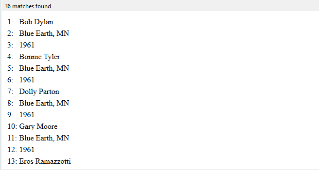
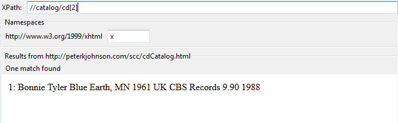
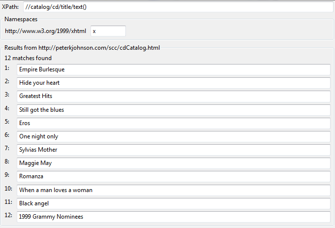
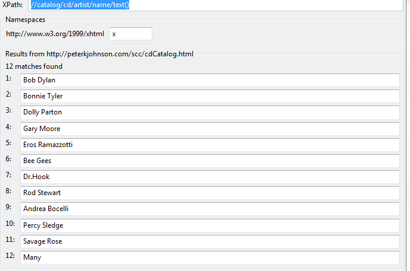
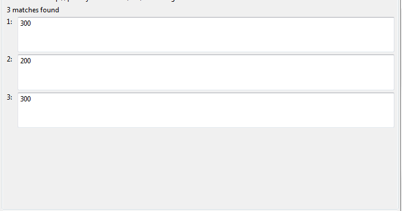
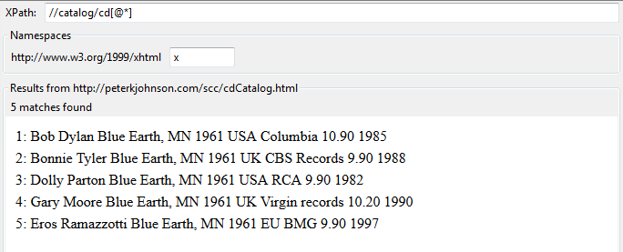
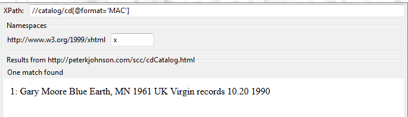
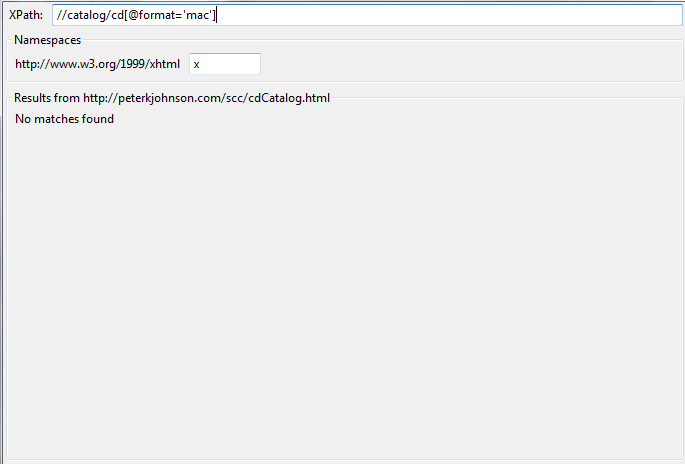
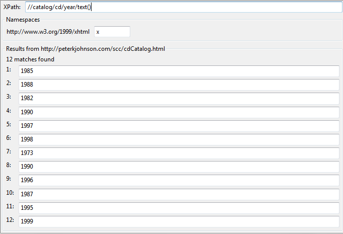
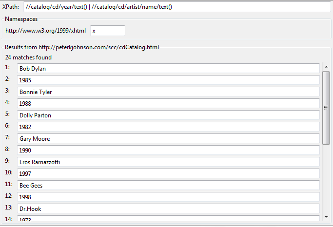

| Change the path statement to each of these |
Write down the specific results |
Screenshot |
| Finding Elements |
1. //catalog/cd/artist/* |
Matches only what's under the <artist> element. 36 matches because 3 elements for each artist |
 |
2. //catalog/cd[2] |
Returns 1 match: the second <cd> element |
 |
3. //catalog/cd/title/text() |
12 matches - Displays the text of all of the titles. |
 |
| 4. What is the xpath to display the contents of the data in: artist/name? |
//catalog/cd/artist/name/text() |
 |
5. //catalog/cd/@type - How many items show up? Why is that? |
3 results because there are only 3 cd elements with the 'type' attribute. |
 |
6. //catalog/cd[@*] - What data is missing? |
The <cd> elements that don't have any attributes. |
 |
7. //catalog/cd[@format='MAC'] - What doesn't show up? Why not? |
The other format value that's 'mac' has spaces around the value. |
 |
8. //catalog/cd[@format='mac'] |
No matches. Conclusion: The query is case-sensitive. |
 |
| 9. Show contents of the element |
//catalog/cd/year/text() |
 |
| 10. Show contents of year and sub-elements of artist name |
//catalog/cd/year/text() | //catalog/cd/artist/name/text() |
 |
{kind=link}
{kind=link}
{kind=link}
{kind=link}
{kind=link}
{kind=link}
{kind=link}
{kind=link}
{kind=link}
{kind=link}